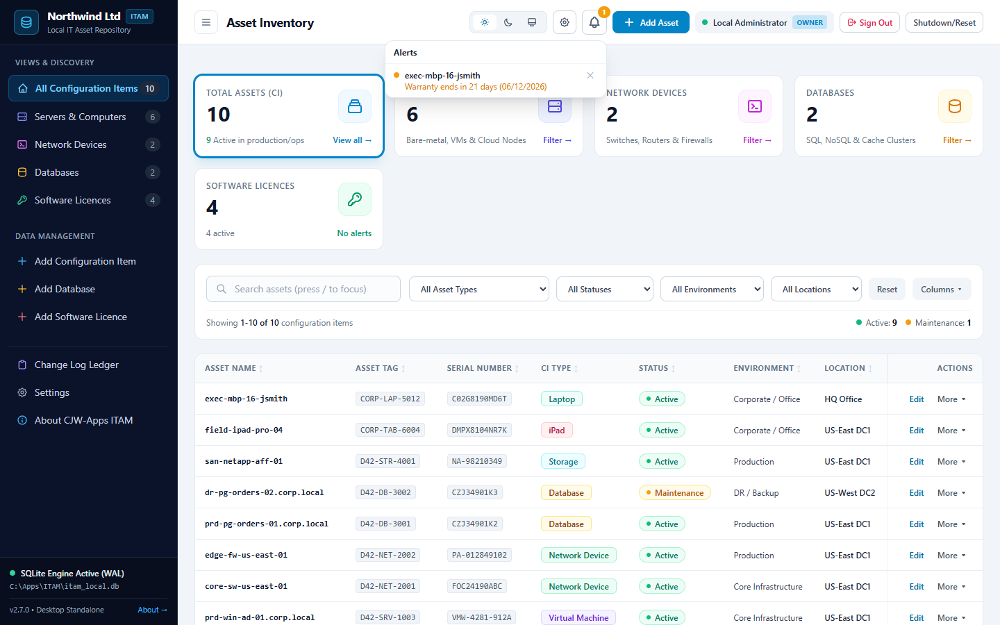
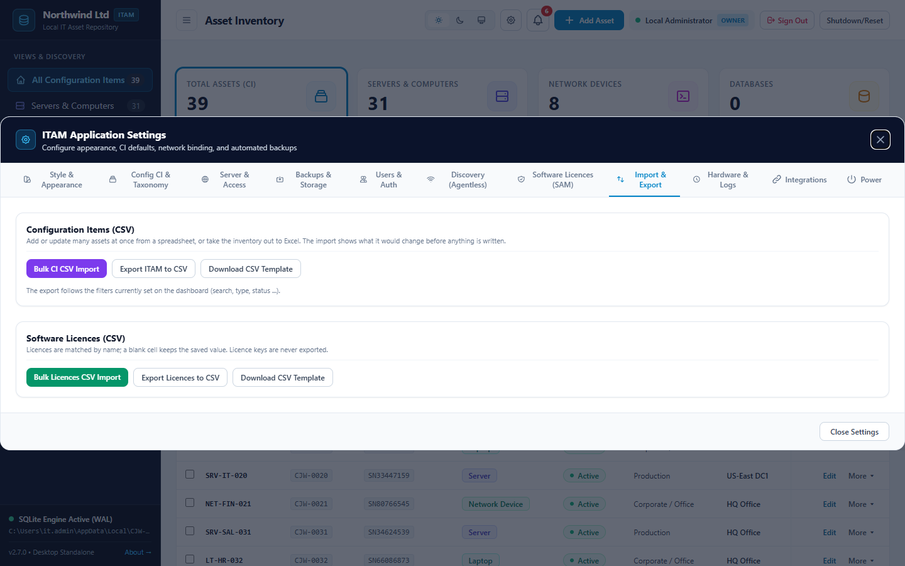

User Guide
CJW-Apps ITAM · Version 2.7.0 · For everyone who uses ITAM
Day-to-day use of ITAM. What you can do depends on your role (see the Installation & Configuration Guide): Viewers look, Editors also add, change, import and export, and Administrators do the rest. Actions are marked (editor) or (admin) below; a button your role cannot use is greyed out with a lock, and hovering says which role it needs.
Dates are shown in your own Windows date format (for example 31/12/2027 in the UK). Date boxes and CSV files
use the same dates; CSV files write them 2027-12-31.
- The screen
- Finding assets
- Adding and changing assets
- Software licences
- Alerts and messages
- Importing and exporting
- Reviewing discovered devices (editor)
- Hardware models and lifecycle
- Change log
- Your own settings
The screen
Left menu - Views & Discovery: All Configuration Items, Servers & Computers, Network Devices, Databases and Software Licences, each with a count. Click one to show it. - Data Management: Add Configuration Item, Add Database and Add Software Licence (admin). - Change Log Ledger, Settings and About CJW-Apps ITAM (version and a support link). - The three-line button at the top left hides or shows the menu.
ITAM icon near the clock (on the PC that runs ITAM): shows that ITAM is running, even with its window closed. Click it, or right-click and choose Open ITAM, to open the window again. Quit ITAM stops the program (it asks first, because it also stops for anybody using it over the network).
Automatic sign-out: after 30 minutes without using ITAM you are signed out, and the sign-in page says why. An administrator can change the time in Settings → Server & Access.
Top bar
- The alert bell.
- Add Asset.
- Your name: click it for your profile and password.
- Shutdown/Reset: built-in admin account only.

The dashboard
Dashboard tiles: Total Assets, Servers & Computers, Network Devices, Databases and Software Licences. Click a tile to show that group.
Finding assets
- Search: type in the search box to look across names, tags, serial numbers, makers, models,
departments, users and tags. Press
/to jump to the search box. - Filters: type (or a whole group), status, environment and location. Reset clears them.
- Status pills under the filters show how many assets have each status; click one to filter by it.
- Columns: choose which of the 21 asset details the table shows (purchase date, cost, supplier and warranty end start hidden). Your choice is remembered.
- Sort: click a column heading.
- Pages: choose 25, 50, 100 or 250 rows per page at the bottom.
Click a row to see all of an asset's details, including its hardware lifecycle status.
Adding and changing assets

The asset form
- (editor) Add Configuration Item (menu) or Add Asset (top bar) opens the form. Add Database opens the same form with the type set to Database. Viewers can open an asset to see its details but not save it.
- Only Asset Name is required. The asset tag and the serial number (per maker) must each belong to one asset only.
- Purchase & Warranty (optional): purchase date, cost, supplier, PO / invoice number and warranty end. The asset's details show the warranty in green while it runs, amber in its last month, red in its last week and grey once ended. Scans and Intune / Google imports never change these.
- Imported By (section 5, filled in by ITAM, not editable): where the asset came from (Microsoft Intune, Google Workspace, a network scan or a CSV file), who imported it (a user name, or Scheduled run (automatic)) and when, with what the source reported (for example Intune's compliance and last check-in). Each Intune or Google import refreshes it; a CSV file only marks the assets it adds. Assets added by hand say so. Notes are only ever what people write: imports never change them.
- + Add New beside a dropdown adds a new value, such as a new location or CI type. A new CI type asks which dashboard group it belongs to.
- (editor) Edit on a row changes an asset.
- (editor) More → Decommission retires an asset. It stays in the inventory with status Decommissioned, so its history is kept. The edit form has a Decommission button too.
- More → Delete permanently (admin) removes it for good, after a confirmation. It is also in the edit form and in the asset's details.
When the inventory is empty, the list offers + Add asset. To import a CSV file or load sample data, use Settings → Import & Export or Settings → Config CI & Taxonomy.
Software licences

Software licences
Software Licences in the menu (or the dashboard tile) lists every licence with:
| Column | Meaning |
|---|---|
| Software Title | Name and publisher |
| Seats | Follows how the licence is counted: per device, 3 of 10 devices in use (red when over); per user, per core or concurrent users, the number bought (use is checked in the publisher's portal); a site licence shows Unlimited |
| Purchased | Date bought |
| Expiry Date | When it runs out |
| Status | Active, Warning (needs renewing within a month), Expired or Discontinued |
The menu count turns amber when a licence expires within a month and red within a week (or once expired).
- Click a licence in the list to see all its details: seats and compliance, dates, cost per period and per year, supplier and PO, notes, and the assets it is installed on (click one to open it). Edit Licence (editor) opens it for changes.
- Licence details & seats opens the full licence screen (Settings → Software Licences): seats bought and in use, how it is billed and licensed, cost, compliance, Edit (editor) and Delete (admin).
- + Add Software Licence (editor) adds one. The fields are explained in the Installation & Configuration Guide.
- To renew a licence, edit it and give it the new expiry date.
- At the top of the licence screen, Subscriptions / Year adds up current subscriptions per year, and One-off Purchases adds up one-time purchases bought this year.
- Installed on: in the licence form, type part of an asset name and choose the assets the licence is installed on (+ Add all shown adds every match at once; ✕ takes one off). Decommissioned assets stay listed but use no seat.
- Compliance compares the seats with the assets chosen under Installed on, only for licences counted per device: more assets than seats is Out of Compliance, half or fewer is Underutilized. A site / unlimited licence has no seat count (the seats box shows Unlimited and the cost is the site licence price) and is always Compliant. Others show Not measured; hover over it for why.
- Licence key: the eye beside it shows a saved key (admin; each look is in the change log).
Alerts and messages

The alert bell
The alert bell shows: - licences that expire soon (amber), or within a week or already expired (red); - warranties that end within 30 days (amber), within a week (red), or ended in the last 30 days (amber); click the asset name to open it. Decommissioned assets are left out; - scheduled runs that left devices to review, each with a Review button: network discovery for editors and administrators, Intune and Google for administrators; - red error messages from this session (see Messages below).
The number on the bell counts all of these. It is red when anything urgent is there (an error message, or a licence in its last week or expired, a warranty in its last week) and amber when only licence or warranty warnings are left; with nothing to show it is hidden. Red items are listed first. Green messages are never counted.
Messages - Green and grey messages close by themselves; click one to close it sooner. - Red error messages stay until you press OK. - Each error is also kept under the bell in Recent messages (the last 20), so you can read it again. Clear empties that list and takes them off the bell's number.
Importing and exporting
Everything is in Settings → Import & Export (editor). Viewers cannot export.

Import and export
Assets
- Export ITAM to CSV: the asset list, following the filters set on the dashboard.
- Download CSV Template: an empty file with the right columns.
- Bulk CI CSV Import (editor):
1. Choose your file.
2. ITAM checks every row and shows which assets will be added and which updated (matched by asset
name), and any rows with problems. An updated row lists each change (old → new), or No changes.
- An update only changes what the row gives: a blank cell, or a column the file does not have, keeps
the saved value, so a file with just a few columns adds or corrects those and leaves the rest alone.
- The purchase columns are purchase_date, purchase_cost, supplier, po_invoice_number and warranty_end
(dates written 2026-12-31; headings such as cost, warranty or invoice are recognised too).
- To empty a field on purpose, put a single - in the cell. CI type, status, environment and location always
have a value, so they cannot be cleared.
3. Check the rows. Untick a row to leave it out; Leave out rows with warnings does that for every row with a
warning, and Show only rows with warnings or errors hides the rest. Edit opens a row's main details:
change them and press Check and keep, and ITAM checks the row again (a fixed row with problems can then be
imported).
4. Press Commit to save the ticked rows. Rows with problems are never imported. Intune and Google reviews work
the same way.
Licences
- Download CSV Template (Software Licences): the columns plus an example row. Rows whose name starts with EXAMPLE are always
skipped.
- Export Licences to CSV: every licence. Licence keys are never exported.
- Bulk Licences CSV Import (editor): opens the same kind of review as assets: what each row will add or update
(matched by name, with each change shown old → new) and which rows have problems. Untick rows to leave them out,
or Edit a row and Check and keep to fix it, then press Import.
- A blank cell keeps the saved value, so you can export, edit in Excel and import again.
- Dates are written 2026-12-31; renewal_required is yes or no; license_status is Active or
Discontinued.
- one_time_purchase is yes for software paid for once. Such a row must leave expiration_date and
renewal_required empty.
- The last columns are billing_period (Monthly, Yearly, Every 2 years or Every 3 years),
licensed_per (Per device, Per user, Per core, Concurrent users or Site / unlimited),
supplier, po_invoice_number, agreement_number, auto_renews (yes or no),
owner_cost_centre and installed_on (the asset names it is installed on, separated by ;; blank keeps the
saved list and a single - clears it; a name that is not an asset is shown as an error). Older CSV files
without them still import.
Hardware reference table: see Hardware models and lifecycle.
Formulas are made harmless in every export, so a cell starting with = cannot run in Excel.
Reviewing discovered devices
(editor) After a network scan, found devices wait for review. Administrators open it from Settings → Discovery → Staged Devices → Review & Import to Inventory; after a scheduled scan, editors and administrators can also open it with Review under the alert bell. The review compares the devices with the inventory before anything changes:
- NEW (green): not in the inventory; it will be added.
- CHANGED (amber): already in the inventory, but the make, model or OS differs. You see both values and choose Keep old details (default) or Update the inventory. Only make, model and OS are ever updated.
- SAME: already up to date. Hidden unless you tick the box to show them.
- Red cells: a CI type, make or model that is new to the inventory. Tick the authorisation box to allow them.
- The red X removes a device you do not want. A later scan finds it again if it is still on the network.
-
Same as… (on a NEW device with a MAC address): the device is an asset you already have, for example a phone that uses a private Wi-Fi MAC. Choose the asset: ITAM remembers this MAC address on it, and later scans recognise the device instead of finding a new one. Phones keep one private MAC per Wi-Fi network, so this is needed once per network; redo it after the phone is reset.
-
Kept scans: every scan, by hand or scheduled, is kept as its own list: the last 5 of each network. Above the staged devices, Scan shows Newest scan of each network or any kept scan, with its date, network, how it was started and how many devices still wait. Review & Import works on the scan chosen there, so you can still import from an older scan. Remove this scan forgets one; a sixth scan of a network removes its oldest.
- A scheduled scan adds nothing by itself: its devices wait in the kept scan (the bell shows how many), unless Import new devices automatically is ticked, which adds only the clearly new devices.
- Network shows which scan each device came from. When there is more than one network, the Network filter shows just one, and Apply decisions then only acts on that network.
- Orange rows look like duplicates of another device found in the scan, and each says why. Tick Show only the possible duplicates to check them. Before you apply, press the red X on any you do not want.
- Same name: asset names are unique, so the later device is added as
name (IP address). - Same serial number from the same maker (for example a PC on both its dock and Wi-Fi): kept as one asset.
- Same MAC address: probably one device on two addresses. Both are added unless you remove one.
Nothing is written until you press Apply decisions. Clear All Scans forgets every kept scan without touching the inventory.
The Intune and Google reviews (admin: Review Intune devices, Review devices from Google) work like the asset CSV import: you see what would be added or updated first.
Hardware models and lifecycle
Settings → Hardware & Logs → Hardware Models lists each make and model, how many assets have it, its release, end-of-life and end-of-support dates, and whether it is still supported. Models in the built-in table show its approximate dates automatically; for the rest an editor or administrator presses Set dates. Open any asset to see its lifecycle status. A model with only a release date (a new product) shows as Supported.
(editor) Export Reference Table (CSV) and Import Reference Table (CSV) let you add models to the reference table or correct its dates in Excel: see the Installation & Configuration Guide.
(editor) Download EOL/EOS Report (CSV) saves the list as a report (Make, Model, CIs, Released, End of life, End of support, Status, Source). It follows the search box and status filter, so you can export, for example, only the models past end of life.
Change log
(admin) Change Log Ledger (menu) records every change: who did it, when, and what. You can search it, filter by action and date, and export it to CSV. Passwords and keys are never written to it.
Your own settings
- Settings → Style & Appearance:
- light, dark or Windows theme;
- font (Scan PC Fonts lists the fonts on your PC);
- text size (80–150%) and bold text;
- a live preview of your choices.
- Your name in the top bar or Settings → Users & Auth: your profile and Change My Local Password. You need your current password to change it. Microsoft and Google accounts change their password with Microsoft or Google.